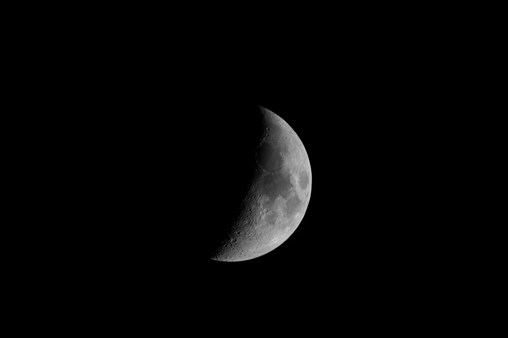

Nébuleuses
Les Nébuleuses présentes dans la voûte céleste !
Les Nébuleuses présentes dans la voûte céleste !
Les Galaxies de notre ciel nocturne !
Toutes mes photos concernant les planètes du Système Solaire (La Lune, Mercure, Vénus, Mars, Jupiter, Saturne et le reste, c'est trop loin !).
Cette nébuleuse située à environ 1500 années lumières de chez nous. Elle à été découverte en 1610. Elle est située dans la constellation d'Orion. Elle est l'une des nébuleuses les plus brillantes du ciel nocturne.
Clique pour avoir la full !
Imageur : EOS 350D
Iso : 800
Poses : 40x50s
DOF : 15 Darks 0 Offsets 0 Flats
Cette galaxie est située à environ 22,8 millions d'années lumières, et son diamètres est de 170 000 années lumières ! Elle à été découverte en 1781 par Charles Messier
Clique pour avoir la full !
Imageur : EOS 350D
Iso : 800
Poses : 45x180s
DOF : 6 Darks 12 Offsets 0 Flats
La demi Lune du 12 avril, le jour du crash de Beresheet, la sonde lunaire israélienne.
Clique pour avoir la full !
Imageur : EOS 350D
Traitement sous Registax 6